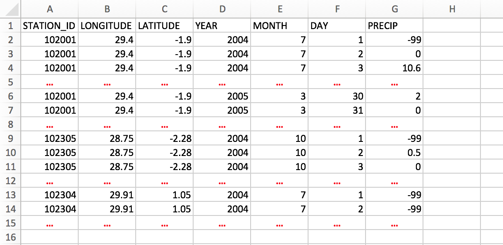
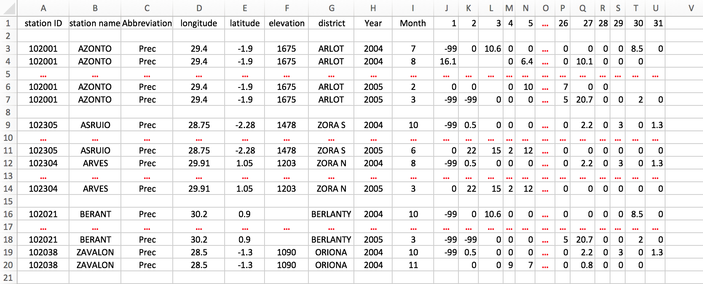
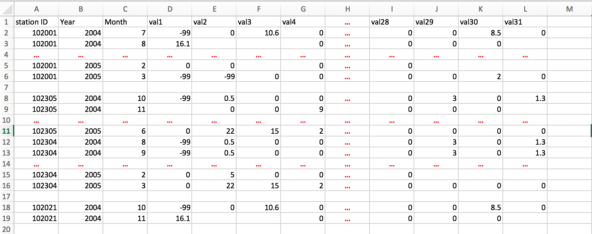
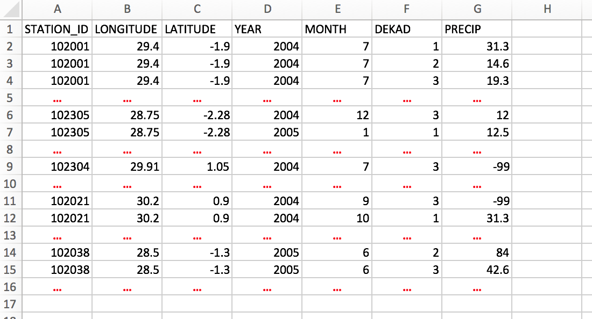
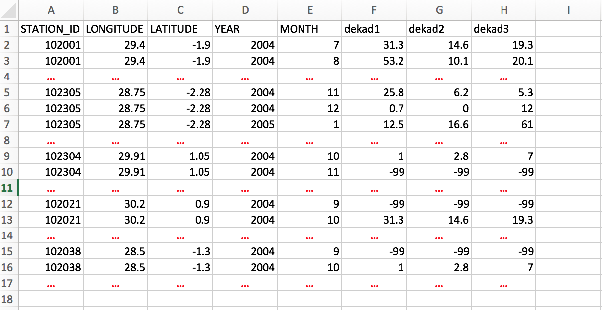
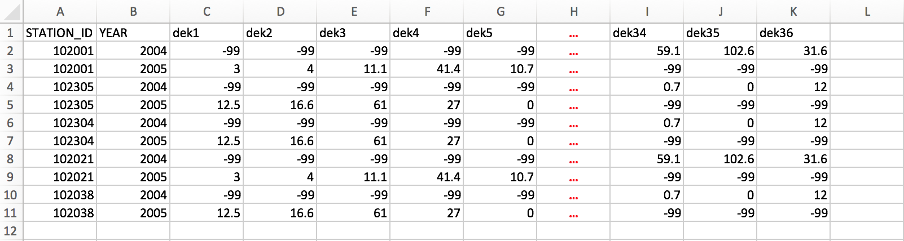
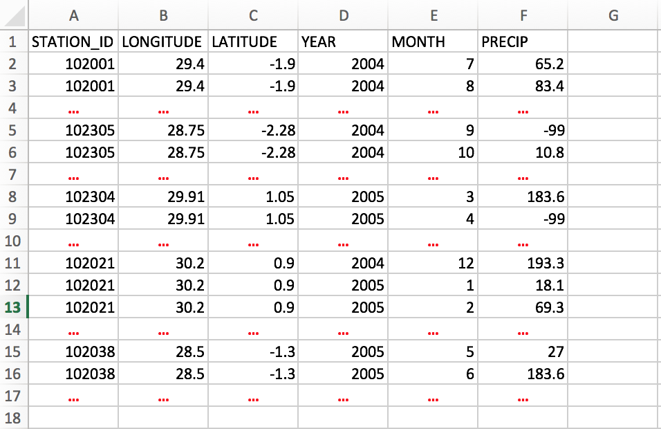
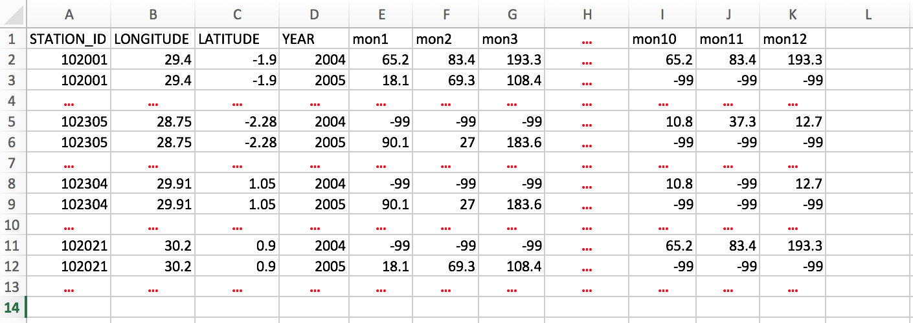

Format CDT Input data
If you do not yet have a data in CDT format to work with, you can format your data to CDT station data format using the menu options .
CDT can format two types of input files:
- the data is already grouped together in a single file but not yet in CDT format
- or each station has its data in a separate file
The menu opens a dialog where you can enter the required input and select the options corresponding to your type of data.
- Select the time step of your data, there are three choices available: daily, dekadal and monthly data.
Enter the start and end date to take account in CDT data output.
Note
The date must be a real, for example, if you enter 31 the day for June or 2015-02-29, this will cause an error.
Dekad must be 1, 2 or 3.
You can enter a date range you want for the final CDT data output, even if each station data has different date range.- Enter here the minimum percentage (according the period you choose) of non-missing values for the series of a station to be accepted for the final CDT data output.
- Enter the name of the file to save the formated data or the full path to the file. You can also click on
 , it opens a file dialog where you can select the name, path and type of file (txt or csv).
, it opens a file dialog where you can select the name, path and type of file (txt or csv). - Select the type of input files to be converted to CDT format, two choices available: Multiple Files and Single File.
Click the button to set the parameters of the input file.
Multiple Files
In this case, each station has its own file, see the section Input series for one station for more details on the format of the data.
Example:
As a simple illustration, suppose we have a daily precipitation data for 5 stations, each station has its own file and the name of each file should be the IDs of the station.
102001.txt
102021.txt
102038.txt
102304.txt
102305.txtThe format of data for each station must be the same. If we have a daily time series with separated date, the format of data in each file will look like as follows
.....
2004 7 1 -99
2004 7 2 0
2004 7 3 10.6
2004 7 4 0
2004 7 5 0
2004 7 6 0
2004 7 7 0
2004 7 8 0
.....And the coordinates of the stations are put in a separate file.
Note
If you edit the coordinates on Excel spreadsheet, you can leave blank the cells with missing values or fill it with missing values flag (-99), then save it as a Comma Separated Values (CSV) file.
The order of the columns 1 to 5 must be respected.
To enter all this information to CDT, click the button , it opens a dialog box
- Enter the full path to directory containing the station files, or browse through .
- Provide a sample of the data.
- Select the file containing the station coordinates, if the file is not loaded yet and therefore not listed, use the to open it.
- Check this box, if you want to include the elevation data to the final CDT data output, provided that your coordinates file has non-missing elevation data.
- Choose the number of climate variables in the file. On our example, we have only one variable (daily rainfall).
- Choose the format of date (grouped or separated). On our example, the date is separated with the format YYYY MM DD.
Click on the button  to execute.
to execute.
Single File
This time, all station data are already put together in a single file with a specific format which are described below. After selected Single File from the drop-down list “Format of input files” and clicked the button , which will display a dialog box.
- Select the file containing the station data to be formated, if the file is not loaded yet and therefore not listed, use the to open it.
- Check this box, if the coordinates of the station are included in the data.
- Select the file containing the station coordinates, if it is not included in the file containing the data. If the file is not loaded yet and therefore not listed, use the to open it.
- Check this box, if you want to include the elevation data to the final CDT data output, provided that the data file contains an elevation data or the elevation data is not missing on the coordinates file.
- Specify the column number for:
- COL.ID: stations IDs
- COL.LON: longitude
- COL.LAT: latitude
- COL.ELEV: elevation data
- COL.YEAR: column containing the year
- COL.MONTH: month
- COL.DAY/DEK: column containing the day or dekad
- COL.DATA: column containing the climate variable or from which climate variable starts
- Select the number of columns containing the climate variable.
- For daily data, there are 2 possible formats:
- 1 column: the climate variable is placed in a single column.

Format of data: one column, coordinates included - 31 columns: each month the climate variable is placed in 31 columns, one column is equivalent to one day.

Format of data: 31 columns, coordinates included

Format of data: 31 columns, coordinates on a separate fileNote
If you edit the data on Excel spreadsheet, you can leave blank the cells with missing values or fill it with missing values flag, then save it as a Comma Separated Values (CSV) file.
In addition, you can leave empty a whole line.
- 1 column: the climate variable is placed in a single column.
- Dekadal data, there are 3 possible formats:
- 1 column: the climate variable is placed in a single column.

Format of data: one column, coordinates included - 3 columns: each month the climate variable is placed in 3 columns, one column is equivalent to one dekad.

Format of data: 3 columns, coordinates included - 36 columns: each year the climate variable is placed in 36 columns, one column is equivalent to one dekad.

Format of data: 36 columns, without coordinates included
- 1 column: the climate variable is placed in a single column.
- Monthly data, there are 2 possible formats:
- 1 column: the climate variable is placed in a single column.

Format of data: one column, coordinates included - 12 columns: each year the climate variable is placed in 12 columns, one column is equivalent to one month.

Format of data: 12 columns, coordinates included
- 1 column: the climate variable is placed in a single column.
- For daily data, there are 2 possible formats:
Click on the button to execute.
Merge two CDT data format
If you want to combine two CDT data formats from two different files into one file, use , and the right command panel will be activated.
- Select the filename of the first CDT data if it is already loaded, or open it through
- Select the second CDT data.
- Enter the name of the file to save the merged data or the full path to the file. You can also click on , it opens a file dialog where you can select the name, path and type of file (txt or csv).
To combine the two files, click on the button
Generated on : February 01, 2017, 23:32